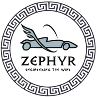
TEAM ZEPHYRZephyr Racing
Mentored through design reviews, project planning, and race-prep coaching as they pushed for a national-finals qualification.
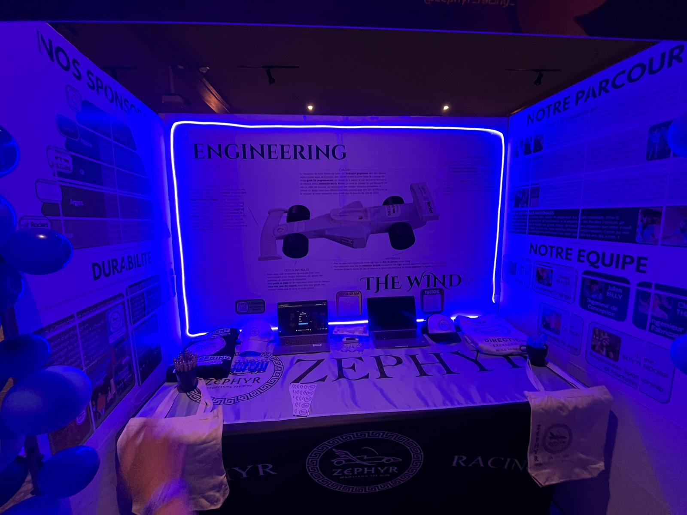
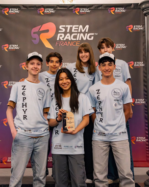
TRS exists to make Île-de-France a hub for STEM Racing excellence on the international stage — driven by innovation, creativity, and teamwork.

TEAM ZEPHYRMentored through design reviews, project planning, and race-prep coaching as they pushed for a national-finals qualification.


Supported with technical mentoring, testing strategy, and presentation coaching to maximize performance and reliability.
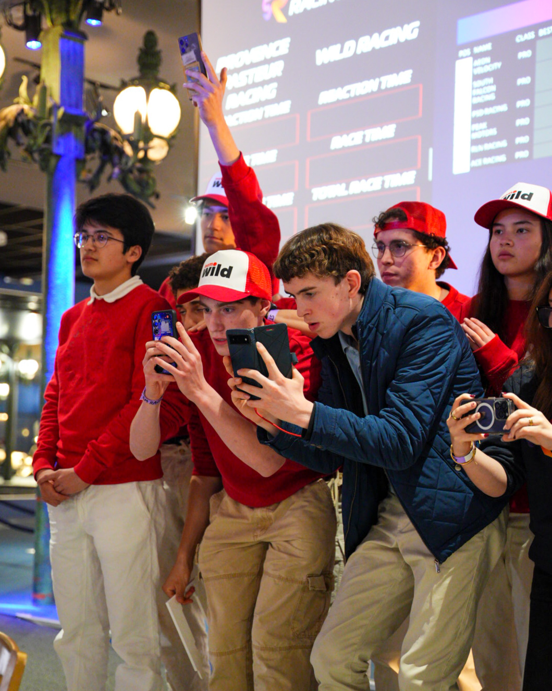
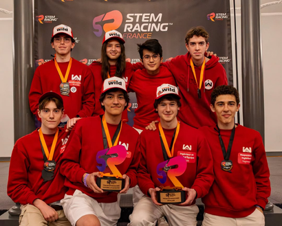
Guided in teamwork, communication, and technical development to build a standout multidisciplinary performance.
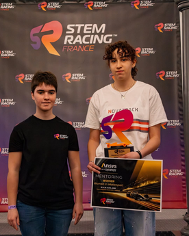
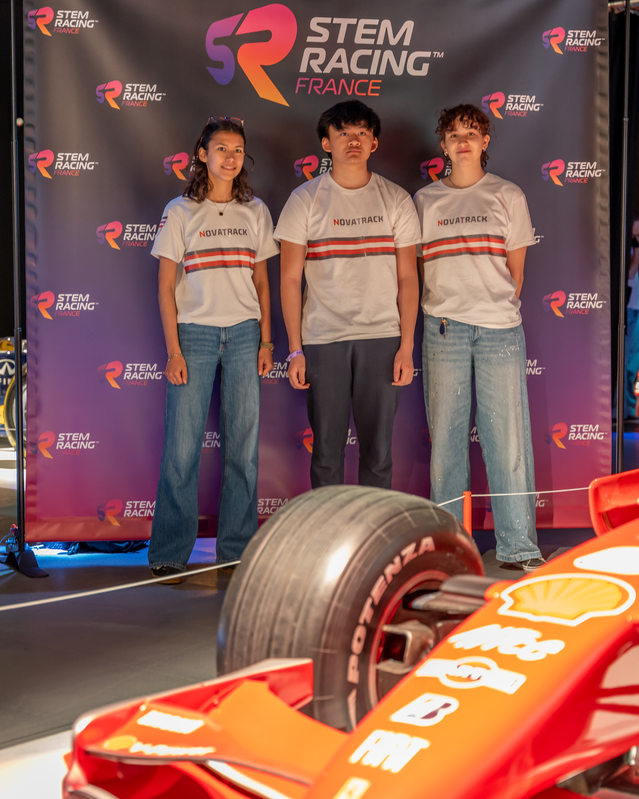
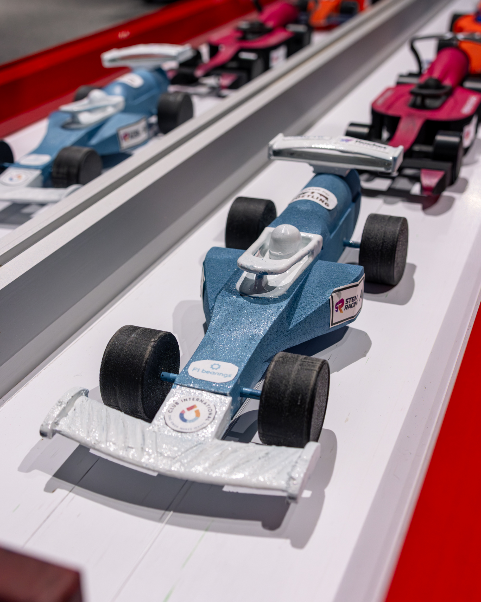
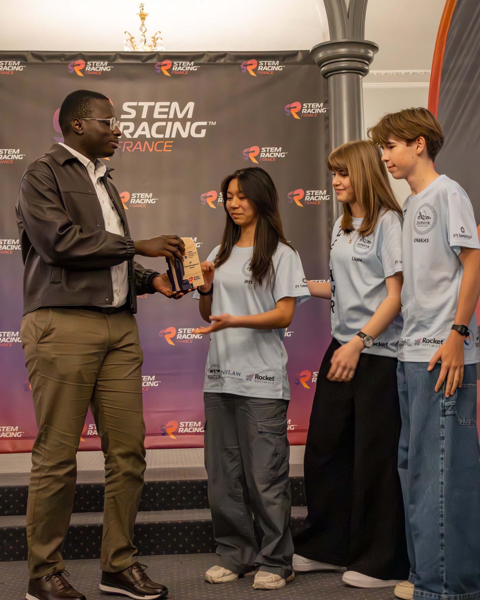
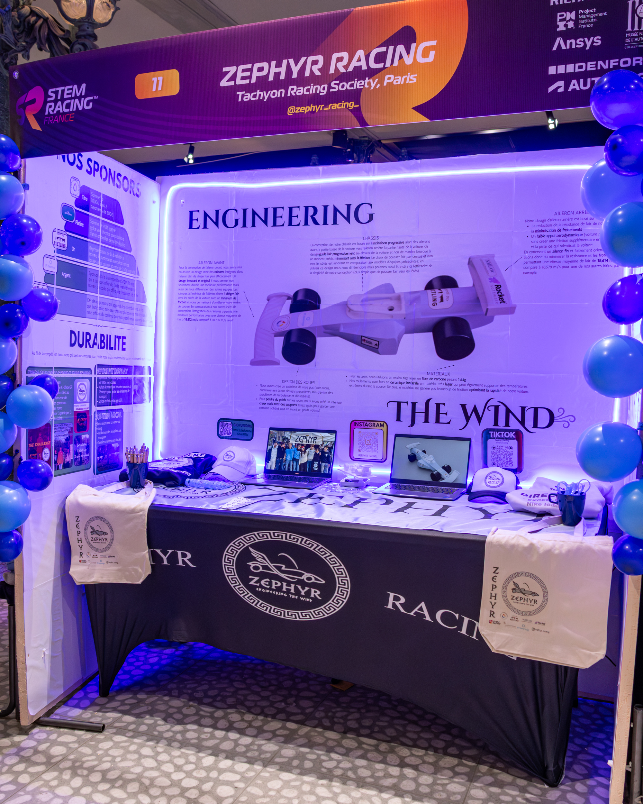
Composed of six Grade 10 students of the Lycée International de Saint-Germain-en-Laye, Zephyr Racing competed in the 2026 French National Finals after having secured 3rd place in the Île-de-France regional competition. After months of preparation, teamwork, and commitment, the team won the Project Management Award presented by the internationally recognized Project Management Institute (PMI).
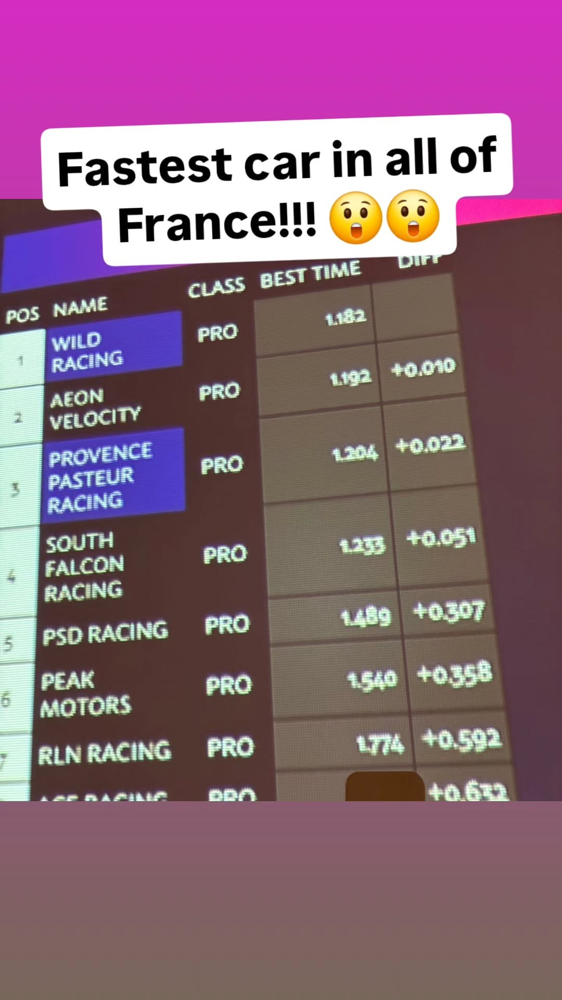
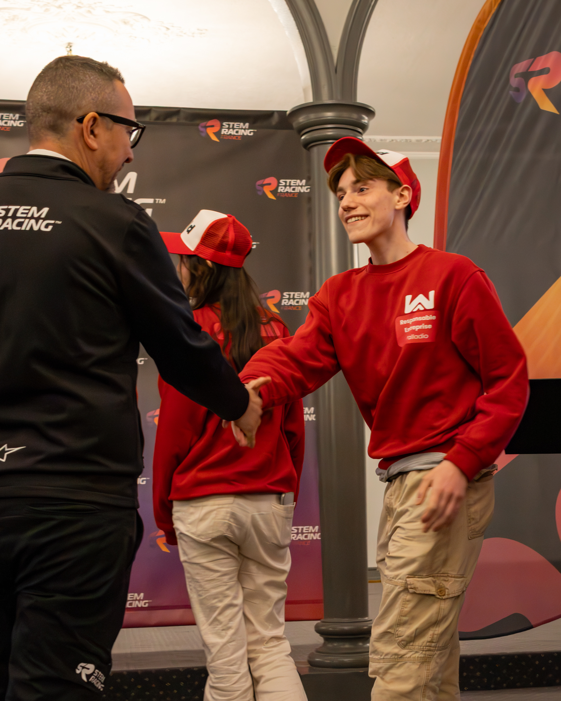
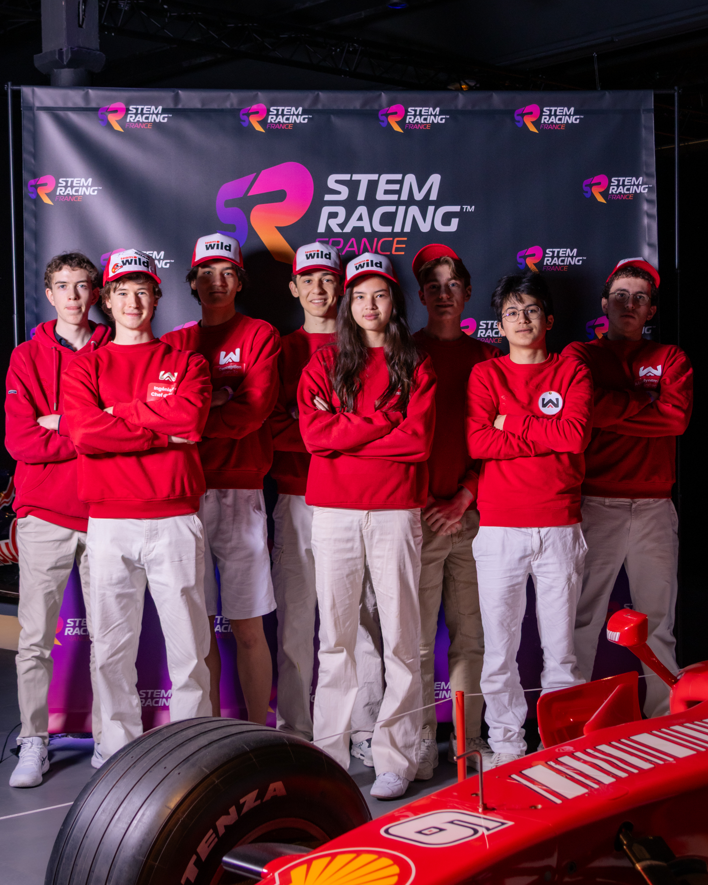
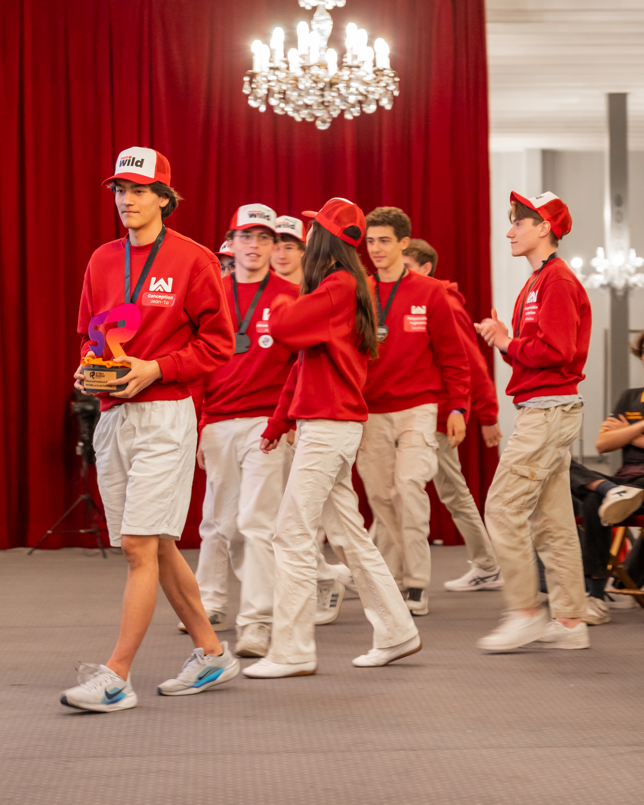
A competitive and high-achieving team, Wild Racing is composed of students aged 15-19 recruited from both the Lycée International and Ecole Jeanine Manuel. Their dedicated work and flawless consistency helped them design and build the fastest car in the French National Finals. Regional winners, the team went on to win 3rd place in the National Finals, earning them a qualification for the World Finals.
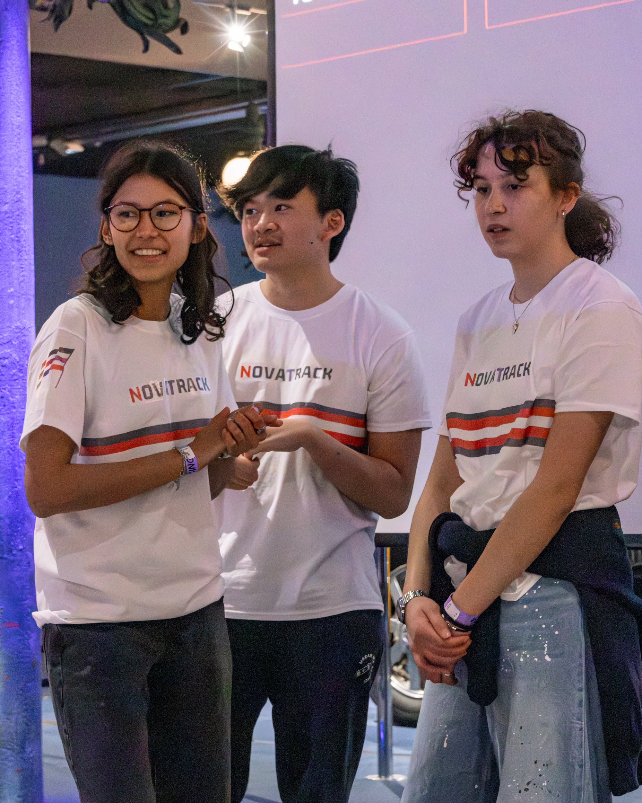
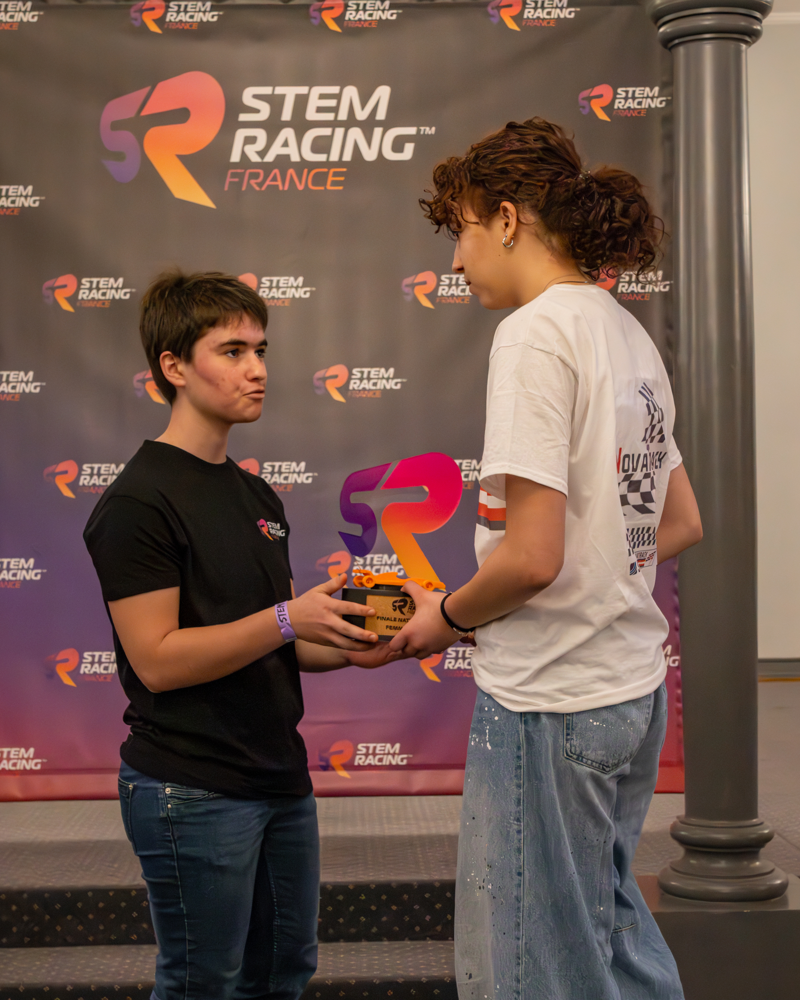
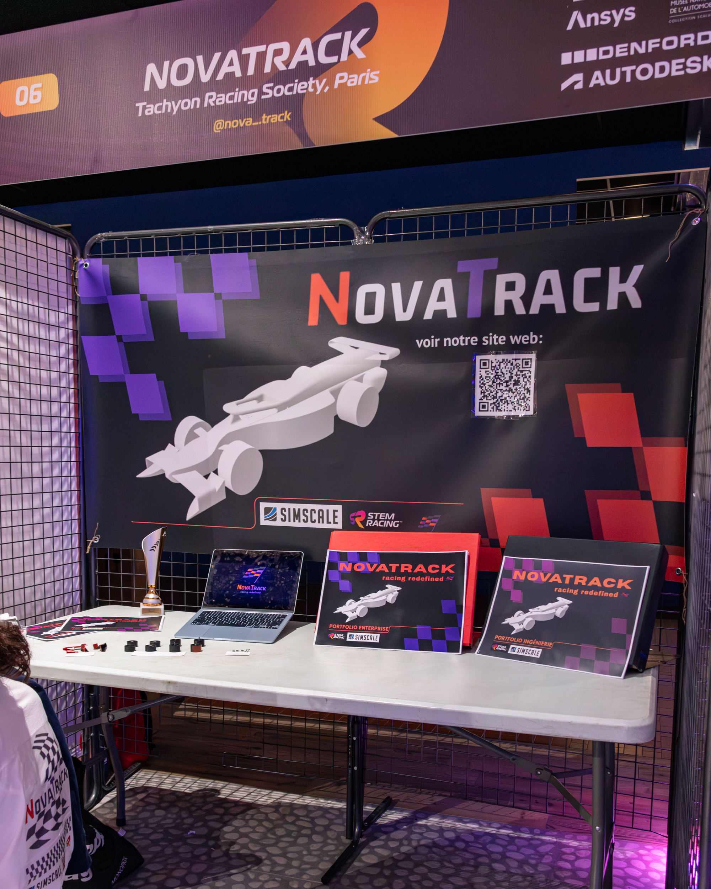
Nova Track demonstrates how the right team culture can multiply technical potential. TRS helped the group strengthen communication, leadership, and cross-functional cooperation so that design, manufacturing, and presentation objectives aligned behind one shared goal.
Our first season proved that student teams can compete at a high level when they are supported by strong mentorship, disciplined project management, and a clear ambition to grow. The next chapter is about scaling that model across Île-de-France and preparing more young engineers to compete internationally.
Recruit more engineers, academics, and industry mentors to support students across design, manufacturing, and competition strategy.
Increase the number of student teams we guide so more young people can access STEM racing, technical leadership, and hands-on engineering experience.
Build toward stronger performances in national finals, deeper technical maturity, and a sustainable path toward international competition.